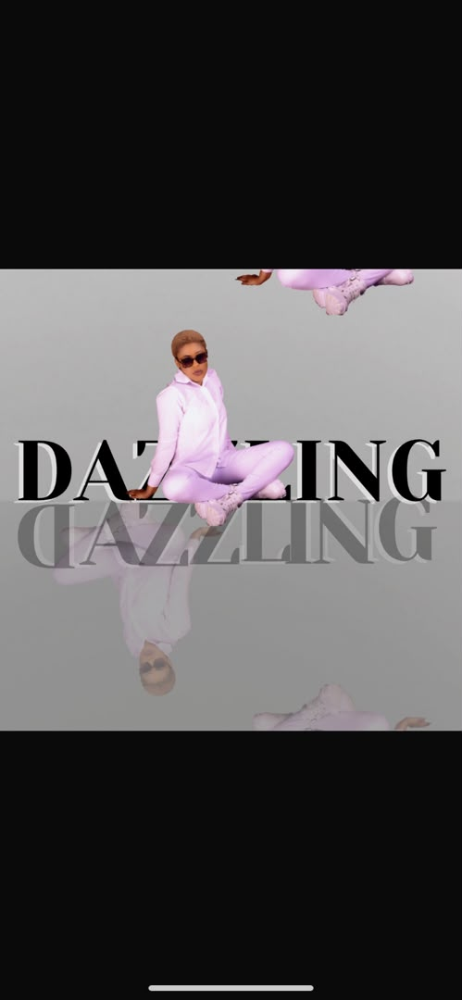

Project One: Mirror Mophism Design

Mirror Morphism is where creativity meets visual transformation, turning simple ideas into captivating designs. My design approach combines originality, elegance, and attention to detail to create visuals that communicate meaning and leave a lasting impression.
View Project